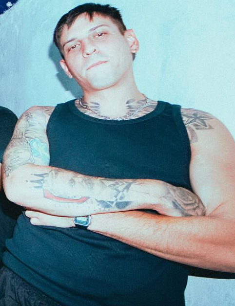
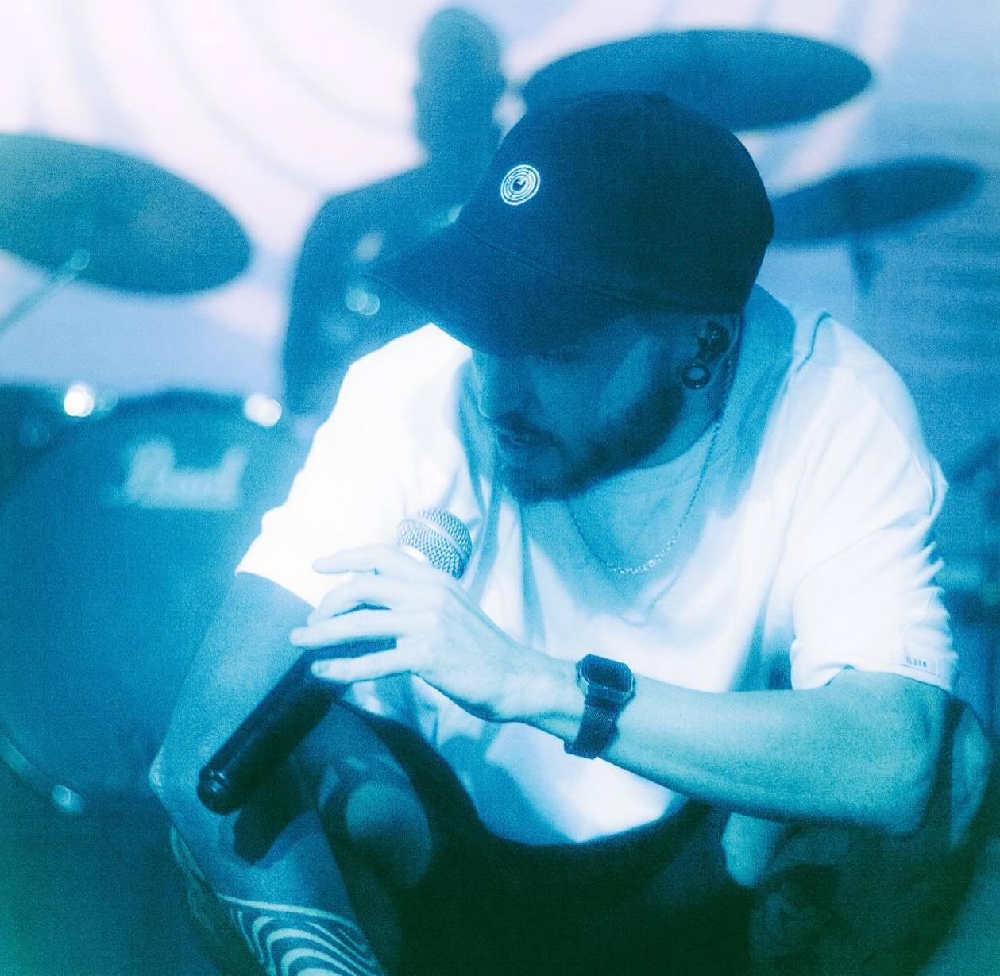

Daniel Patricio, mejor conocido como "Saje", forma parte de la escena del hip hop argentino desde hace más de 14 años, la cual ha revolucionado con su influencia de Jorge Luis Borges y sus métricas innovadoras.


Kelo. Aunque no se sabe mucho sobre su vida privada, eso no es impedimento a la hora de disfrutar de sus métricas perfectas y letras que te hacen volver a escuchar una y otra vez por lo increibles que son son sus mensajes.